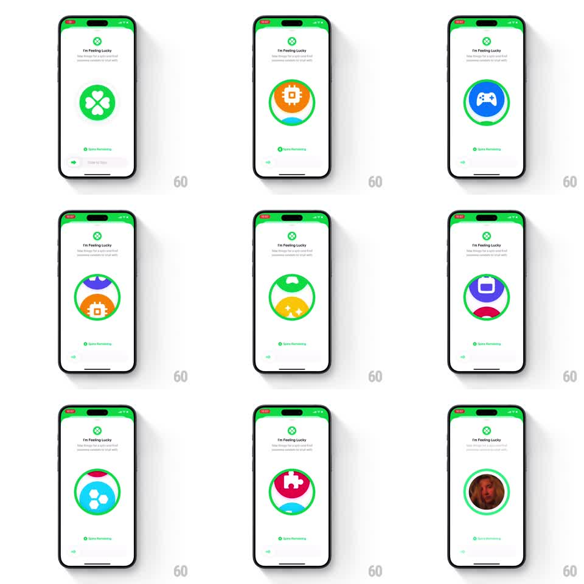

Media
Frame-by-frame

Rebuild this interaction 1:1: Honk's "I'm Feeling Lucky" - sliding a "Slide to Spin" slider sets a slot-machine drum of interest icons spinning inside a green ring until it lands on a match.

Rebuild this interaction 1:1: Honk's "I'm Feeling Lucky" - sliding a "Slide to Spin" slider sets a slot-machine drum of interest icons spinning inside a green ring until it lands on a match. ## Integration Integration: stack-agnostic spec - springs given as stiffness/damping, timed motions as duration + curve; map every value to your framework and animation library of choice. ## Scene White screen with a green-tinted status bar, green clover mark, and "I'm Feeling Lucky" header. Center: a large green-ringed circular drum. Below: a "Spins Remaining" counter with a green dot and a "Slide to Spin" slider pill. Inside the drum, interest cards (chip, game controller, chat bubble, TV, film reel, puzzle) rendered as colorful half-disc pairs rotate past like slot reels. ## Motion spec Pattern: slide-to-spin slot drum. - Slide the slider knob to the right: the knob fills the track green; on commit the drum starts spinning - interest pairs whip past vertically (accelerating to ~3 revs over 600ms, ease-in). - The spin holds at speed (~1.5-2s), each card snapping through center with motion blur; the green ring pulses subtly (scale 1.0-1.03) while spinning. - Deceleration eases out over ~800ms until one card clicks into center with a small overshoot bounce (spring ~420/24); the counter ticks down as the result lands. - On a match, the drum crossfades to the matched person's photo filling the ring (300ms), with a soft glow flash around the ring (400ms). - The slider resets: knob springs back left (spring ~350/26) ready for the next spin. ## Calibration - Cards pass through the drum as a continuous reel - no pop-in at edges; each enters from the top and exits bottom. - Deceleration must land centered on a card; a half-shown result reads as a bug. ## Reduced motion Drum crossfades through 2-3 cards then settles; no blur. ## Don't miss - Each interest card is a bold two-tone half-disc pair - the split-color design is the visual signature. - "Spins Remaining" decrements only when the drum stops, not at slide commit.